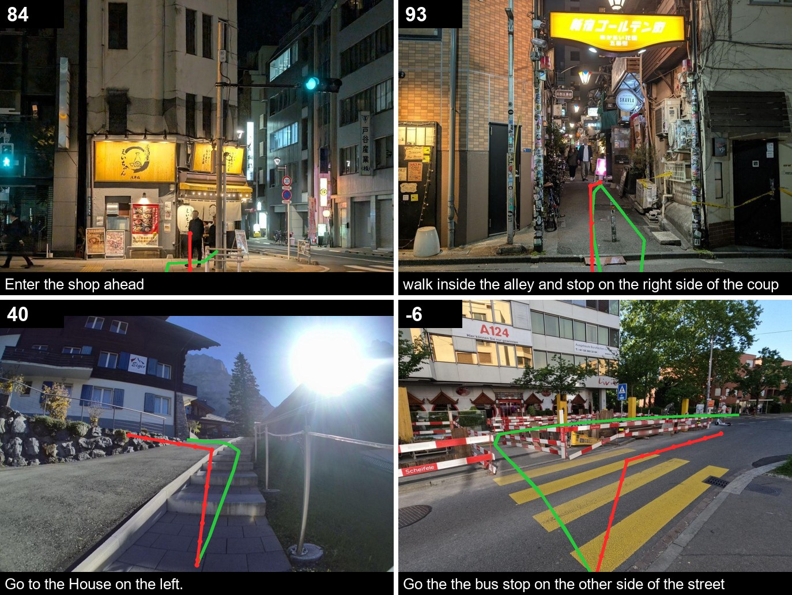

Tracely looks at a street photo and an instruction, and draws the path a person would walk. It learned from 10,220 scenes built in 3D, labeled by geometry, and it beats every published model on the NaviTrace benchmark.
Vision-language models can describe a street. Drawing a sensible walking route through it is much harder.
The problem
The NaviTrace benchmark asks a model to draw the path a person should take in a real photo, scored against a human expert. Leading models fall well short of people, mostly because they struggle to locate the goal and to ground space: where the sidewalk is, which way the crosswalk goes, what is in the way.
Our approach
Real traces are slow and costly to draw by hand. So we build towns in 3D, place a camera at eye height, and compute the route from the scene itself. Every path is exact by construction. An open 8B model fine-tuned on these scenes alone, Tracely, went from worse-than-straight-ahead to first among published models on real photos.
How a scene is made.
Four steps turn a procedural town into training data.
Step 1
Build a world
A streets town, an old town on two levels with people and cafes, and a campus above a lake with a promenade, stairs and lawns. Every surface is tagged.
Step 2
Place a camera
At eye height on a sidewalk, square or park path, looking where a pedestrian would. 5,373 cameras in all.
Step 3
Plan the walk
A* search on a 25 cm walkability map: sidewalks preferred, roads only at crossings, around groups of people, stairs or ramps where needed.
Step 4
Render and label
The image, a per-pixel class mask, the task in plain English, and the path in image pixels.
Explore the scenes.
A sample from the three worlds. Open any scene to see the task, its labels, and the route a person would take.
No scenes match this filter.
Trained on renders. Tested on photos.
Qwen3-VL-8B, fine-tuned with LoRA on the synthetic scenes only, scored on the 500 Human scenarios of the NaviTrace validation split with the official code. 0 is walking straight ahead, 100 is the expert path.
Category
Untrained
World 1
Worlds 1+2
Tracely
Overall
−28.3
26.0
28.3
36.9
Dynamic Obstacle
−25.0
31.2
41.4
50.5
Stationary Obstacle
−23.7
28.6
32.1
41.1
Semantic Terrain
−24.0
26.3
26.8
39.7
Geometric Terrain
−27.8
25.1
26.9
36.1
Accessibility
−34.1
24.4
25.7
32.8
Visibility
−27.6
24.1
24.8
30.3
Social Norms
−59.8
10.5
15.7
24.1
75.5
Human expert
36.9
Tracely (8B)
35.4
Gemini 2.5 Pro
21.1
GPT-5
19.3
Qwen3-VL 235B
Published scores are Human-only means from the NaviTrace leaderboard (hidden test split). Tracely is measured on the validation split and has not been submitted, so the comparison is indicative.

Tracely on real NaviTrace photos it never saw: expert path in green, Tracely in red, score in the corner. Bottom right is a miss: the wrong bus stop.
Try it on your photo.
Upload a first-person street photo, write an instruction, and Tracely draws the walk. It runs on a cloud GPU that starts on demand: the first request after a quiet spell takes 3-4 minutes, then about 15 seconds each. 100 requests a day.
Nothing is stored. Photos are resized to 1024 px before upload.
Open data. Open model. Open code.
Use the dataset or the model in your own experiments, or generate more scenes with the pipeline.
Tracely is a 175 MB LoRA adapter for Qwen3-VL-8B-Instruct, trained in three rounds, one per world. The repository has the Blender scripts that build worlds, place cameras, plan routes and render, plus training, scoring and this demo.
Base Qwen3-VL-8B · LoRA rank 16 · about 4 h on one A100